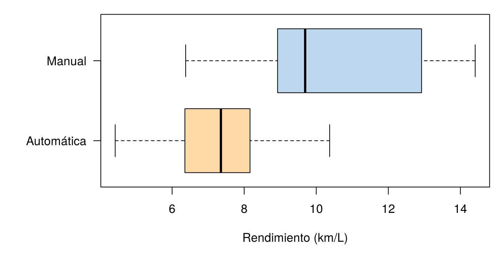
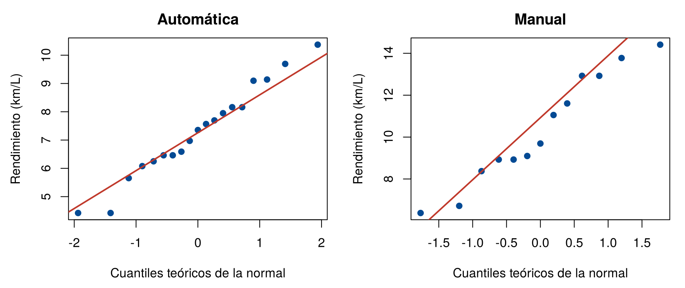
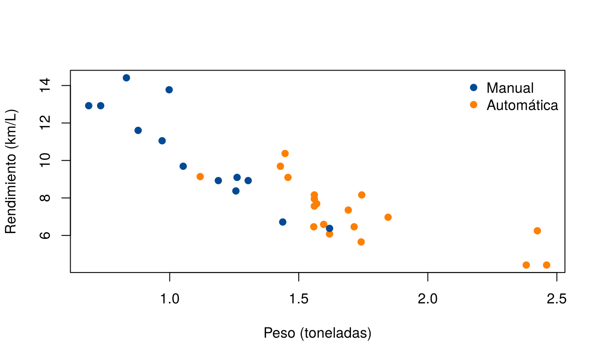

Este caso reúne en un solo análisis lo visto en la unidad: describir los datos, elegir un modelo, estimar con intervalos de confianza, comparar dos grupos con pruebas paramétricas, no paramétricas y bootstrap, y, sobre todo, interpretar los resultados con cuidado. Se trabaja con datos reales que vienen con R.
La pregunta es: ¿consumen menos combustible los carros con transmisión manual que los de transmisión automática? Los bloques de código se ejecutan en orden.
La tabla mtcars tiene 11 características de 32 modelos
de carros, publicadas por la revista Motor Trend en 1974. Se
usan tres:
Variable en mtcars |
Qué mide | Transformación |
|---|---|---|
mpg |
Rendimiento, en millas por galón | Se pasa a kilómetros por litro (km/L), multiplicando por 0.4251 |
am |
Transmisión: 0 automática, 1 manual | Se pasa a texto |
wt |
Peso, en miles de libras | Se pasa a toneladas, multiplicando por 0.4536 |
carros <- data.frame(
rendimiento = mtcars$mpg * 0.4251,
transmision = ifelse(mtcars$am == 1, "Manual", "Automática"),
peso = mtcars$wt * 0.4536
)
head(carros) rendimiento transmision peso
1 8.92710 Manual 1.188432
2 8.92710 Manual 1.304100
3 9.69228 Manual 1.052352
4 9.09714 Automática 1.458324
5 7.94937 Automática 1.560384
6 7.69431 Automática 1.569456table(carros$transmision)
Automática Manual
19 13 aggregate(rendimiento ~ transmision, data = carros,
FUN = function(x) round(c(media = mean(x), mediana = median(x), desv_est = sd(x)), 2)) transmision rendimiento.media rendimiento.mediana rendimiento.desv_est
1 Automática 7.29 7.35 1.63
2 Manual 10.37 9.69 2.62par(mar = c(5, 7, 1, 1))
boxplot(rendimiento ~ transmision, data = carros, horizontal = TRUE, las = 1,
col = c("#FFD8A8", "#BDD7EE"), xlab = "Rendimiento (km/L)", ylab = "")
Rendimiento de combustible según el tipo de transmisión.
Los carros manuales rinden en promedio 10.4 km/L y los automáticos, 7.3 km/L. Los manuales también varían más.
Las muestras son pequeñas (13 y 19 carros), así que conviene revisar la forma de los datos con gráficos Q-Q, como en Distribución muestral:
par(mfrow = c(1, 2), mar = c(4.5, 4.5, 2.5, 1))
for (g in c("Automática", "Manual")) {
x <- carros$rendimiento[carros$transmision == g]
qqnorm(x, main = g, pch = 19, col = "#034A94",
xlab = "Cuantiles teóricos de la normal", ylab = "Rendimiento (km/L)")
qqline(x, col = "#C0392B", lwd = 2)
}
Gráficos cuantil-cuantil del rendimiento en cada grupo.
En los dos grupos los puntos siguen bastante bien la línea, sin asimetrías fuertes ni valores extremos. Las pruebas t son razonables. De todas formas, se comprobará el resultado con una prueba no paramétrica y con bootstrap.
Antes de comparar, un intervalo de confianza para el rendimiento medio de todos los modelos, como en Intervalos para una población:
t.test(carros$rendimiento)$conf.int[1] 7.616805 9.464244
attr(,"conf.level")
[1] 0.95Con 95 % de confianza, el rendimiento medio de este tipo de carros está entre 7.6 y 9.5 km/L.
Con \(\mu_M\) y \(\mu_A\) el rendimiento medio de los carros manuales y automáticos:
\[ H_0: \mu_M = \mu_A \qquad\qquad H_1: \mu_M \neq \mu_A \]
manual <- carros$rendimiento[carros$transmision == "Manual"]
automatica <- carros$rendimiento[carros$transmision == "Automática"]
t.test(manual, automatica)
Welch Two Sample t-test
data: manual and automatica
t = 3.7671, df = 18.332, p-value = 0.001374
alternative hypothesis: true difference in means is not equal to 0
95 percent confidence interval:
1.364437 4.795211
sample estimates:
mean of x mean of y
10.369170 7.289346 Se rechaza \(H_0\) (valor p de 0.001). Con 95 % de confianza, los carros manuales rinden en promedio entre 1.4 y 4.8 km/L más que los automáticos.
Comprobación con otros métodos:
wilcox.test(manual, automatica, exact = FALSE)$p.value # Mann-Whitney[1] 0.001871391set.seed(2026)
dif_medianas <- replicate(5000, median(sample(manual, replace = TRUE)) - median(sample(automatica, replace = TRUE)))
quantile(dif_medianas, c(0.025, 0.975)) # intervalo bootstrap para la diferencia de medianas 2.5% 97.5%
0.93522 5.95140 La prueba de Mann-Whitney también rechaza \(H_0\), y el intervalo bootstrap para la diferencia de medianas, de 0.9 a 6.0 km/L, no contiene el 0. Los tres métodos coinciden: los carros manuales de estos datos rinden más.
Que los manuales rindan más no significa que la transmisión manual cause el mejor rendimiento. Estos datos son observacionales: nadie asignó al azar el tipo de transmisión a cada carro. Puede haber otra variable relacionada con las dos, una variable de confusión. Una candidata es el peso:
aggregate(peso ~ transmision, data = carros, FUN = mean) transmision peso
1 Automática 1.709571
2 Manual 1.093630cor(carros$peso, carros$rendimiento)[1] -0.8676594colores <- ifelse(carros$transmision == "Manual", "#034A94", "#FF7F00")
plot(carros$peso, carros$rendimiento, pch = 19, col = colores,
xlab = "Peso (toneladas)", ylab = "Rendimiento (km/L)")
legend("topright", c("Manual", "Automática"), col = c("#034A94", "#FF7F00"), pch = 19, bty = "n")
Rendimiento según el peso del carro. Los colores indican el tipo de transmisión.
Los carros automáticos de estos datos pesan en promedio 1.7 toneladas y los manuales, 1.1. Además, a más peso, menos rendimiento (correlación de −0.87). Parte de la diferencia, o toda, podría deberse a que los automáticos son más pesados. Para separar el efecto de la transmisión del efecto del peso se necesitan modelos de regresión, que se estudian más adelante.
En estos 32 modelos de 1974, los carros con transmisión manual rinden en promedio entre 1.4 y 4.8 km/L más que los automáticos, y tres métodos distintos llevan a la misma conclusión. Pero los datos no permiten afirmar que la transmisión cause la diferencia, porque los carros manuales también son más livianos. Además, los modelos son de hace 50 años y no representan a los carros actuales.
Un buen informe estadístico reporta las tres cosas: la estimación con su intervalo, la evidencia de la prueba y los límites de la conclusión.
Estime la proporción de modelos que rinden 8.5 km/L o más, con un intervalo del 95 %.
sum(carros$rendimiento >= 8.5)[1] 14prop.test(sum(carros$rendimiento >= 8.5), 32)$conf.int[1] 0.2683511 0.6211967
attr(,"conf.level")
[1] 0.9514 de los 32 modelos (43.8 %) rinden 8.5 km/L o más. El intervalo de Wilson va de 26.8 % a 62.1 %: es muy ancho, porque solo hay 32 carros.
Repita la comparación entre transmisiones solo con los carros de menos de 1.5 toneladas. ¿Se mantiene la diferencia?
livianos <- carros[carros$peso < 1.5, ]
table(livianos$transmision)
Automática Manual
4 12 t.test(rendimiento ~ transmision, data = livianos)$conf.int[1] -2.7673816 0.5143516
attr(,"conf.level")
[1] 0.95Entre los carros livianos quedan 4 automáticos y 12 manuales. Con la
fórmula rendimiento ~ transmision, R resta
en orden alfabético: automática − manual. El intervalo va de −2.8 a 0.5
km/L y contiene el 0: entre carros de peso parecido, la diferencia ya no
es clara. Con tan pocos automáticos la comparación tiene poca
información, pero el resultado refuerza la sospecha de que el peso
explica buena parte de la diferencia.
Redacte en tres frases, para un gerente sin formación estadística, la conclusión del caso.
Una posible redacción: “En los 32 modelos analizados, los carros con transmisión manual recorren en promedio entre 1.4 y 4.8 km más por litro que los automáticos. Sin embargo, los manuales de estos datos también son más livianos, y el peso por sí solo explica buena parte del rendimiento, así que no podemos atribuir la diferencia a la transmisión. Además, son modelos de 1974, por lo que el resultado no se debe trasladar a los carros actuales.”
mtcars.mtcars.Última revisión: 7 de noviembre de 2026.